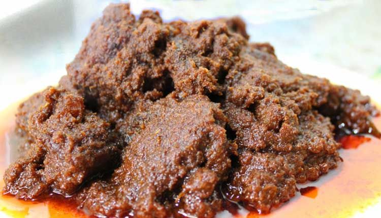
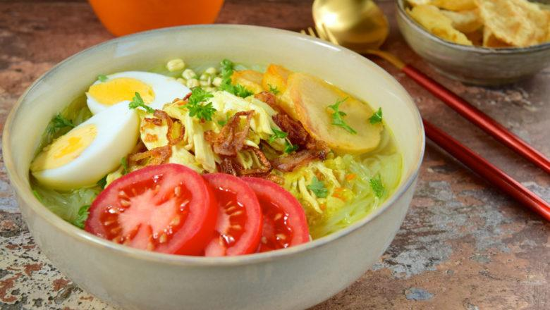

Indonesia merupakan negara kepulauan yang memiliki popoulasi terbesar. Indoenesia juga terkenal akan keberagaman budaya dalam masyarakat dan suku bangsa di wilayahnya, setiap suku memiliki bahasa dan budaya sendiri. Setiap daerah memiliki ciri khas tersendiri, seperti suku bangasa, keragaman bahasa, rumah adat, pakaian dan senjata tradisional. makan khas, alat musik tradisional dan upacara adat. Kuliner Indonesia sudah mendunia banyak orang luar juga menyukai makanan indonesia karena rasanya yang akan kaya rempah-rempah. berikut adalah 5 makanan khas indonesia yang dikenal oleh dunia
1. Rendang

Rendang adalah makanan daging yang berasal dari Minangkabau. Makan ini dihasilkan oleh proses memasak suhu rendah dalam waktu lama menggunakan aneka rempah-rempah. Kuliner daging ini di nobatkan pada tahun 2011 sebagai makanan terenak didunia.
2. Nasi Goreng

Nasi goreng adalah sebuah makan berupa nasi yang digoreng dan diaduk yang disajikan gabungan nasi dan telur, ayam atau udang dengan perpaduan bumbu. Nasi Goreng masuk urutan kedua sebagai makanan terenak di dunia yang di lansir oleh CNN Travel.
3. Sate

Sate di Indonesia umumnya disajikan dengan berbagai jenis daging seperti ayam, kambing dan juga sapi dan. Yang dibaluri dengan beberapa jenis saus seperti kacang dan kecap. Di setiap daerah sate berbeda beda proses penyajianya. Sate masuk urutan ke-14 sebagai makanan terenak di dunia yang dilansir oleh CNN Travel.
4. Nasi Padang

Nasi padang adalah sebutan makanan khas Minangkabau. Nasi padang adalah sebuah hidangan yang disajikan secara lengkap secara prasmanan dengan daging, ikan, sayuran dan makanan pedas dimakan dengan nasi, itu adalah komoditas ekspor paling terkenal masyarakat mingkabau mempunyai kontribusi yang besar untuk maskan indonesia.
5. Soto

Soto adalah makanan khas indonesia seperti sop yang terbuat dari kaldu daging dan sayuran. Daging yang sering digunakan adalah daging sapi dan ayam, tetapi ada pula yang menggunakan daging babi atau kambing. Soto di berbagai daerah memiliki khasnya dan komposisi yang berbeda-beda, misalnya soto Madura, soto Kedediri, soto Palembang dan lain sebagainya. Cara penyajian soto berbeda sesuai kekhasan disetiap derahnya. Soto biasa dihidangkan dengan nasi, lontong, ketupat, mie, atau bihun untuk menambah kenikmatanya bisa disertai dengan kerput, perkedel, emping, sambel dan sambel kacang. Ada pula yang menambahkan telur, sate dan berbagai macam gorengan.